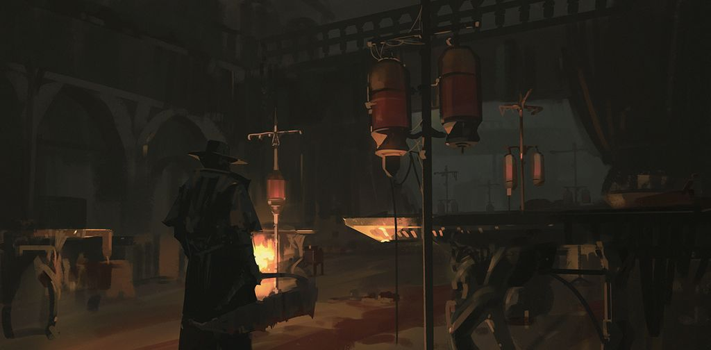

The Game
This is an Action RPG developed by From Software, release in March of 2015 for the PS4, with one expansion, the "Old Hunters". Because of its similarity with the Dark Souls series, also developed by From Software, it's been labeled as a "souls-like" game, thus belonging to the "soulsborne" series. The lore of the game is heavily influenced by Lovecraft's work and it is explained through exploration and attention to details: there is almost nothing in terms of exposition, thus the story and lore are totally optional. Even though the Bloodborne universe is hard to grasp at first, it's very rewarding when you begin to understand it. VaatiVidya's Bloodborne Lore video does an excellent job on explaining the lore and some of its interpretations.
The Lore
The story is set in the fictional town of Yharnam. Our character, hereby referred as the hunter, seeks a blood treatment that's only avaliable in this baffling queer town. A while later after the hunter's arrival, they find out that some sort of purge is happening. It is the night of the hunt. Yharnam citizens are sick: they are becoming horrendous beasts. After a series of events, the hunter meets Gehrman, The First Hunter, who tells them that, as hunters, they need to hunt.
Gameplay
In character creation we begin by choosing our origin: this sets our beginning stats and it's an important choice if you plan on min-maxing. The MugenMonkey's Bloodborne Character Planner, linked on the header of this page, lets you plan your build. There are two categories of weapons in this game: trick weapons and firearms. They are unique and build based. In other words, there are various playing styles and each weapon scales with specific stats. So, it's important to plain ahead when thinking about the build. Weapons can be upgraded using blood gems, items that are rewarded to the hunter by completing chalice dungeons. Some of these dungeons are procedurally generated, meaning they have a seed. Some seeds are optimal for gem farming. This spreadsheet contains information about the seed, its boss, and treasures that the hunter can find in each dungeon. Here are some elements of it:
| Seed | Chalice | Gem Type | Boss |
|---|---|---|---|
| kkvk8gsj | Pthumeru Ihyll | Abyssal Cold | Pthumerian Elder |
| 7vvid666 | Pthumeru Ihyll | Abyssal Fire | Watchdog of the Old Lords |
| 3ahijkdp | Pthumeru Ihyll | Abyssal Heavy | Headless Bloodletting Beast |
The youtuber Moose Torrent has a great playlist showcasing very creative builds in PvP. By purging beasts out of their misery, the hunter gains blood echoes, which is the in game experience points. With these, you can choose which stats to increase when speaking to the doll later on. Upon death, the hunter loses all of their blood echoes. They can be recovered by getting to the place of death and killing the beats that has stolen it.
Multiplay
Coop and PvP are very strong elements in the soulsborne series. A hunter can ring a bell to call for help from other hunters (other players) or to invade another hunter's world (PvP).
Conclusion
Bloodborne is, perhaps, one of the best titles for PS4. It's worth every penny. It's a tough game, like any soulsborne game, but it's very rewarding, specially when you get into the PvP. 10/10 would play again. Thanks for reading!
DISCLAIMER
This page was made for educational purposes (i.e.: learn how to write in HTML and CSS). I do not earn any money from it. Therefore, the images used in this webpage do not belong to me. Here are the artists:
Background image: Ishutani.
Eileen's image: AnatoFinnstark.
Iosefka's clinic: snatti89.
